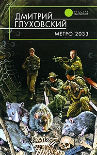
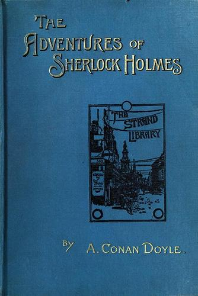
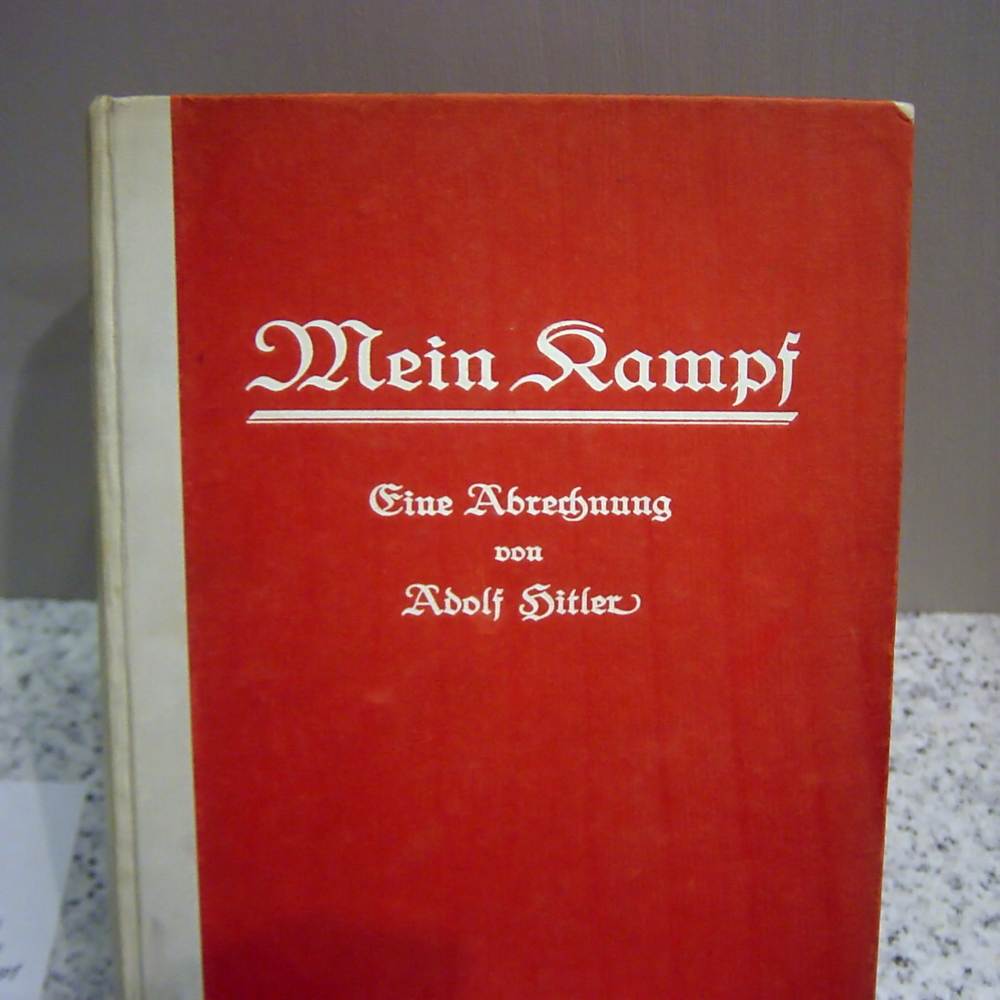
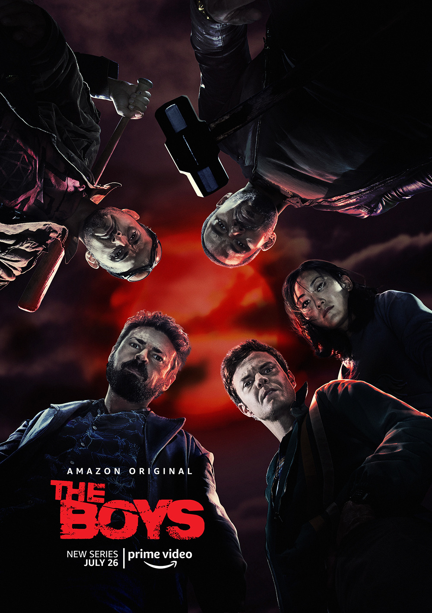
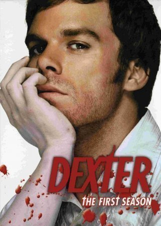
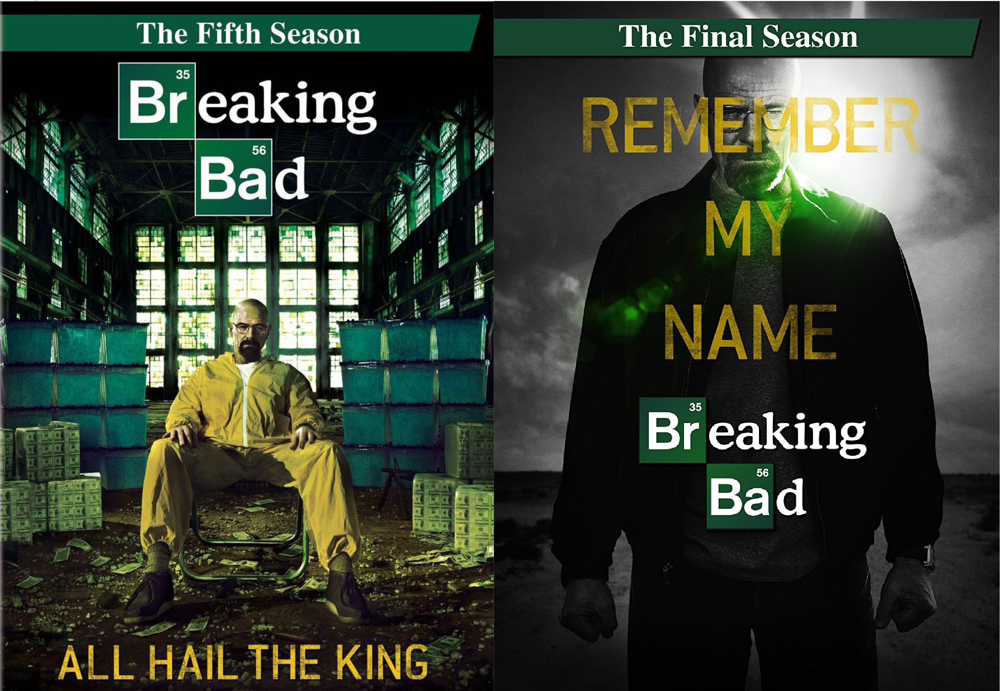
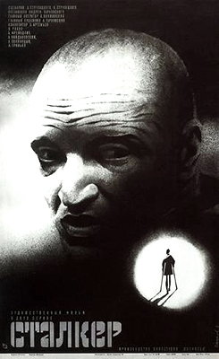
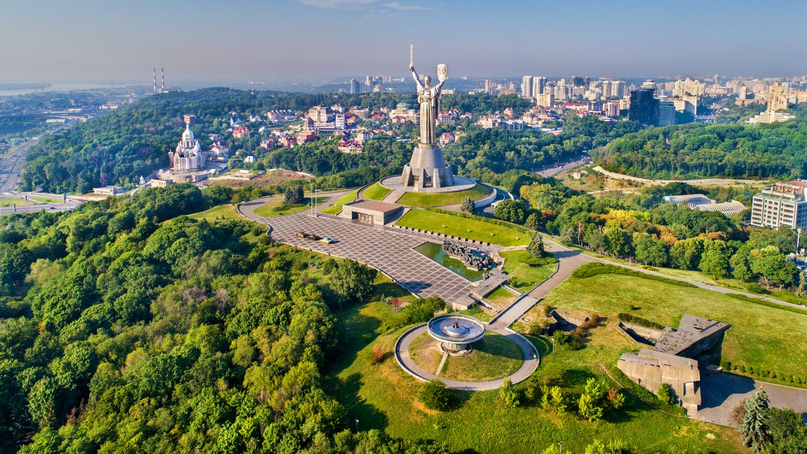
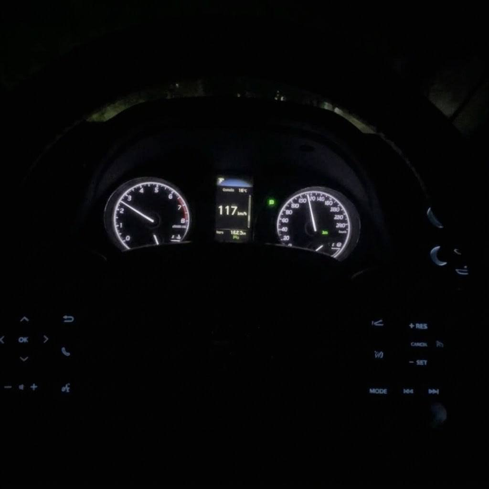

Стрільба і Бушкрафт
Змалечку мене вчили влучно стріляти по мішеням, це захоплення також привело мене до страйкболу та виживанню в диких умовах.
Я студент третьокурсник ЛНУ ім. Івана Франка спеціальності «Прикладна Математика». Працюю в сфері комерційної нерухомості. Є учасником ГО «Шквал».
КЗШ №72 / КЗО «ГРАНД» ДОР · 2013–2024 · Кривий Ріг
Запам'яталось знайомствами, супроводом по різних етапах дорослішання та й в цілому школа — один з найважливіших періодів життя, адже супроводить нас від раннього дитинства і майже до повноліття.
ЛНУ ім. Івана Франка · Факультет прикладної математики та інформатики · 3 курс.
| Дисципліна | Семестр | Тип контролю |
|---|---|---|
| Вебпрограмування | 5 | Залік |
| Математичний аналіз | 1–3 | Іспит |
| Чисельні методи та ЧМЛА | 4–5 | Іспит |
| Англійська мова за проф. спрямуванням | 1–4 | Залік |
Список улюблених дисциплін:
Приклад самооцінки ключових практичних та професійних навичок:
Змалечку мене вчили влучно стріляти по мішеням, це захоплення також привело мене до страйкболу та виживанню в диких умовах.
Захоплення комп'ютерними іграми і обмежений бюджет змусили мене навчитись розбиратись в тому, як отримати найбільшу ціну/якість при збірці ПК.
Urban exploration* — дослідження закинутих будівель, бомбосховищ, підземних комунікацій тощо.

Подобається як передали атмосферу безвиході в людей після катастрофи.

Англійська елегантність поєднана з гострим розумом - ідеальне комбо.

Цікаво провести аналогії з життям.
Вбив 255 (160 підтверджених офіційно) ворогів, один з найрезультативніших снайперів сучасності.

Нацистська ідеологія є ворожою для України ©Іван «Юнкер» Галенко, командир в АЗОВі. Ворогів треба знати в лице; також для аналізу варто вивчати «Капітал» Маркса.
Серіал про альтернативну реальність, у якій країни Осі перемогли в Другій світовій війні, проте все одно не зруйнувались під своєю вагою.

Спочатку це була класна супергеройська сатира на сучасну повістку і супергероїку, але останній сезон скотився до висміювання Трампа.

Кому не подобається дивитись на розсудливих вбивць? Щоправда, хоч цей серіал і вважають легендою, насправді в Декстера удачі більше, ніж розуму.

Легендарний серіал про кримінал з наркотиками, рідна тема для жителя Кривого Рогу.

Кіно для рефлексії і спокою, де немає жодного екшону - лише атмосфера і їжа для роздумів.
Кожен день я роблю комплекс вправ на грудну клітину (ЛФК), ці вправи також розкачують груди, спину та біцепс/трицепс.
Крім того для балансу я займаюсь ногами, пресом, найширшими та плечима — останні два м'язи слугують для підкреслення результатів ЛФК. Спорт також позитивно впливає на розумову діяльність, тому я підтримую форму регулярно.


Перша комерційна сторінка, створена з моєю участю.
Технології: HTML, CSS, JavaScript (Vanilla), SASS, TypeScript.
Сайт проєкту (репозиторій приватний)Спроба створити повністю ШІ продукт заради експерименту. Деякі речі доопрацьовуються.
Технології: Gemini AI, HTML/CSS.
Репозиторій проєктуНайбільша досягнута мною швидкість — 117 км/год. В колі знайомств маю співзасновника SoftServe Тараса Кицмея (також співвласник Lem Station).

«Лише втративши все до кінця, ми стаємо вільними»
«Багато хочеш — багато буде»
Навчальна форма перевіряє заповнення полів засобами браузера (HTML5 Form Validation). Для прямого зв'язку використовуйте вказану електронну адресу.